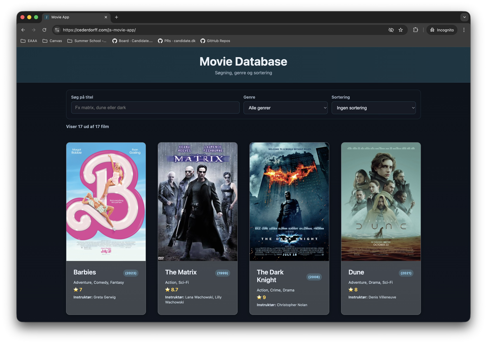
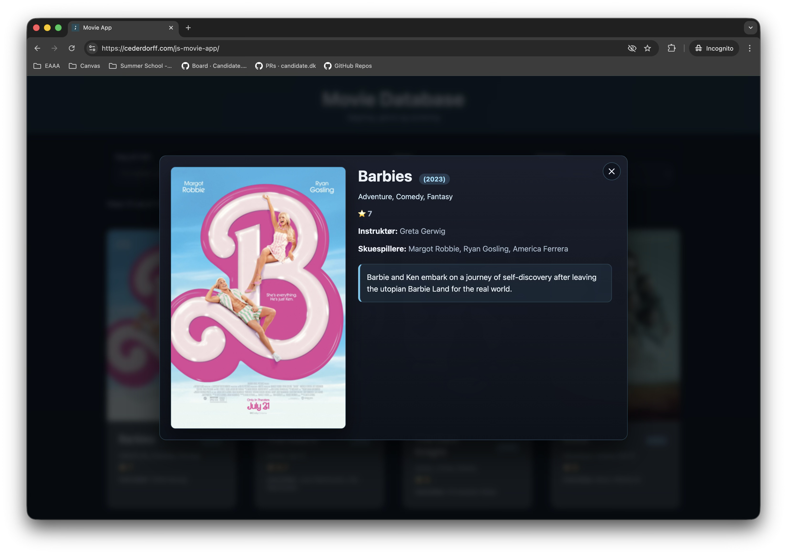
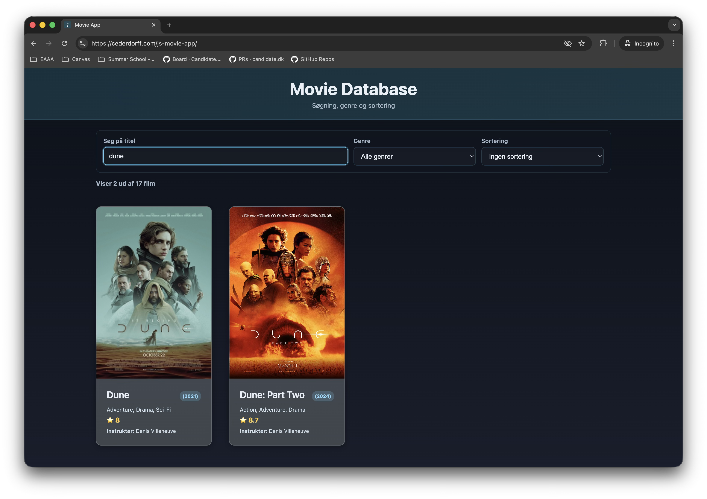

RACE 1
JavaScript Fundamentals & Movie App Setup
08-04-2026
Dagens Dagsorden
- Introduktion og Movie App setup
- Client-Server modellen & Webudvikling
- Variables, Datatyper & Console
- querySelector & DOM Manipulation
- Events & Klik-tæller
Dagens mål
- Forstå variabler med
const-først tilgang - Bruge
console.log()til debugging - Finde HTML-elementer med
querySelector() - Reagere på klik med
addEventListener() - Bygge en fungerende klik-tæller
Movie App
Vi bygger en simpel Movie App trin-for-trin.

1) Overblik: film-grid med søgning, genre og sortering.

2) Klik på film: åbner detaljer i modal.

3) Søgning: fx "dune" filtrerer visningen.

4) Filtrering/sortering: genre + titel giver hurtig navigation.
Klik på et billede for at åbne den færdige løsning.
Hvad skal I lægge mærke til?
Progression i forløbet
- DAG 1: Klik-tæller og JavaScript fundamentals
- DAG 2: Arrays, loops og hardcoded movie data
- DAG 3: Fetch + simpelt genre-filter
- DAG 4: Titel-søgning, dialog, sortering og deployment
Vi bygger videre på den samme Movie App hele vejen.
Project Setup
movie-app/
├── index.html
├── app.js
└── app.cssSemantiske tags fra starten:
<header> • <main> • <section>
| HTML | Struktur |
| CSS | Udseende |
| JavaScript | Interaktion |
Hvem er RACE?
Rasmus Cederdorff
Lektor & Web App Udvikler
- Webudvikling, JavaScript, React, Node.js & BaaS
- Programmering med øje for UI og UX
- Hjemmesider, webshops, web-apps og mobile-apps
- "Jeg taler JavaScript"
Min baggrund (kort)

Lidt om mig

Rasmus Vase Cederdorff
- Bor i Holstebro
- Gift med Matias
- Døtre: Alicia & Ida
- Sport & Fitness (prøver i hvert fald)
- Elsker gadgets, fotografering & indretning
Hvad er der galt med min arm? 💪
Nååh ja
Mig og min mand var med i
Nybyggerne 2025
Client-Server Modellen
Hvad sker der når du besøger en hjemmeside?
Hvad er en variabel?
En "beholder" til lagring af data.
const count = 0;
let name = "Rasmus";
var age = 28; // undgå denne
const først — kun brug let hvis du skal ændre
værdien.
Datatyper
const number = 42; // Number
const text = "Hello"; // String
const flag = true; // Boolean
const empty = null; // Null
const nothing = undefined; // Undefinedconsole.log() — Din Debugging Ven
console.log("Hej verden!");
console.log(myVariable);
console.log(count, name);Sådan ser du outputtet:
Tryk F12 → Inspector → Console tab
querySelector() — Find HTML Elementer
const button = document.querySelector("button");
const box = document.querySelector("#my-box");
const items = document.querySelector(".item");Regl: CSS-selector → første match
Ændr indhold og style
const heading = document.querySelector("h1");
heading.textContent = "Ny tekst";
heading.style.color = "red";
heading.style.fontSize = "24px";Hvad er et Event?
Brugeren gør noget...
- Klik på en knap
- Skriver i et tekstfelt
- Ruller siden
Vi reagerer på det med JavaScript
addEventListener()
button.addEventListener("click", function() {
console.log("Knappen blev klikket!");
});Når brugeren klikker, kører koden i funktionen.
Klik-tæller — Plan
- Hent knap-element
- Hent display-element
- Opret variabel:
count = 0 -
Når knap klikkes:
- Øg count med 1
- Opdater display
Klik-tæller — Kode
const button = document.querySelector("button");
const display = document.querySelector(".count");
let count = 0;
button.addEventListener("click", function() {
count = count + 1;
display.textContent = count;
});Reset-knap
resetButton.addEventListener("click", function() {
count = 0;
display.textContent = count;
});Samme princip, anden handling.
Refactor til Funktioner
function updateDisplay() {
display.textContent = count;
}
function increment() {
count = count + 1;
updateDisplay();
}
button.addEventListener("click", increment);Samme kode, men renere struktur.
Opgaver i Dag
- Opgave 0: Setup
- Opgave 1: Variabler
- Opgave 2–3: querySelector & DOM
- Opgave 4–5: Klik-tæller
- Opgave 6: Udfordringer + refactor
→ Du styrer hastigheden
Vigtige Links & Ressourcer
- Console:
F12→ Inspector - Opgaver: Movie App DAG 1
- Færdig løsning: cederdorff.com/js-movie-app
- Hjælp: Teams /
race@eaaa.dk - Kode Ref: javascript.info
- Valley of Code: thevalleyofcode.com
Hovedpunkter i Dag
✓ Variabler
✓ DOM elementer
✓ Events & Event listeners
✓ Klik-tæller
Næste gang: Arrays & Loops